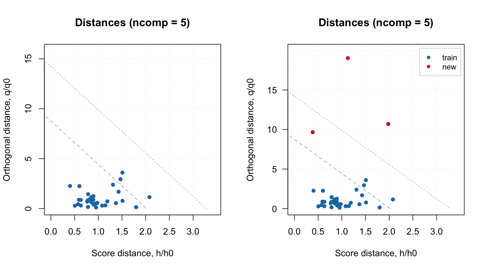
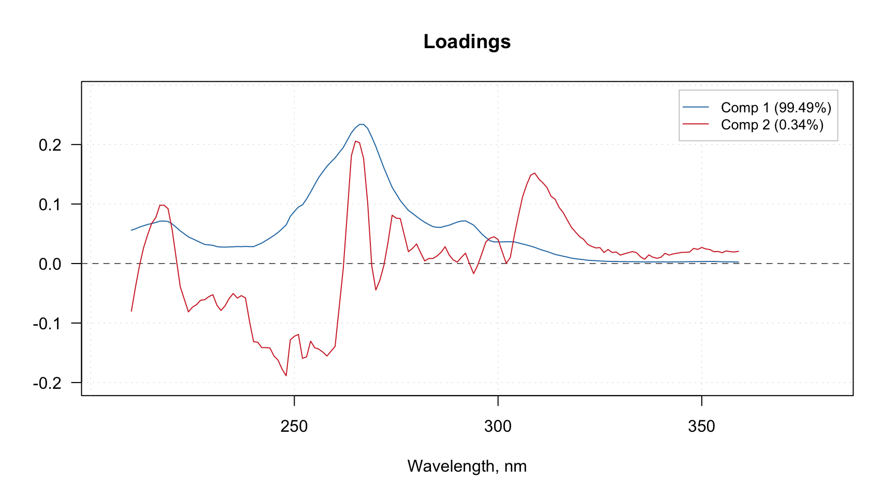
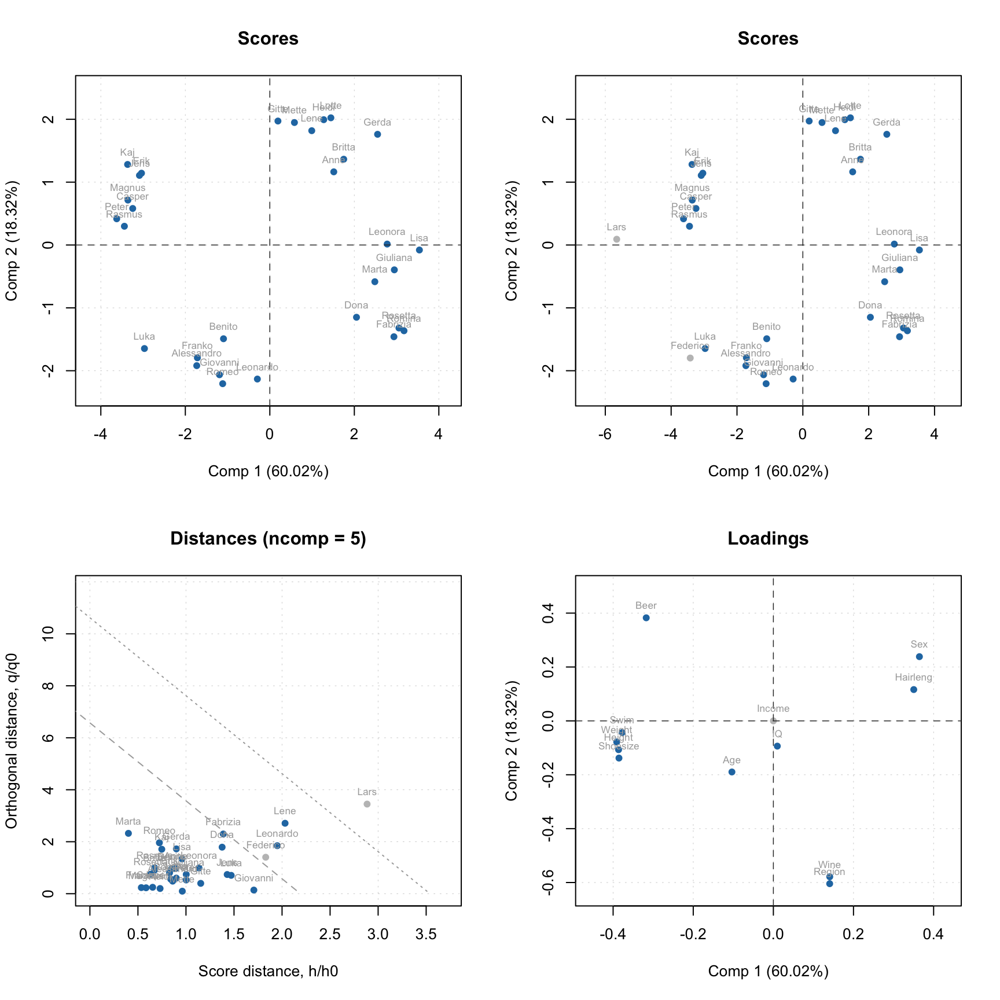
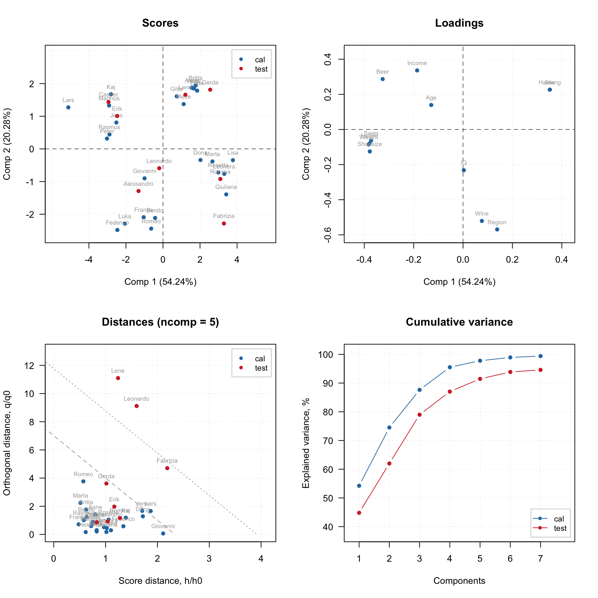
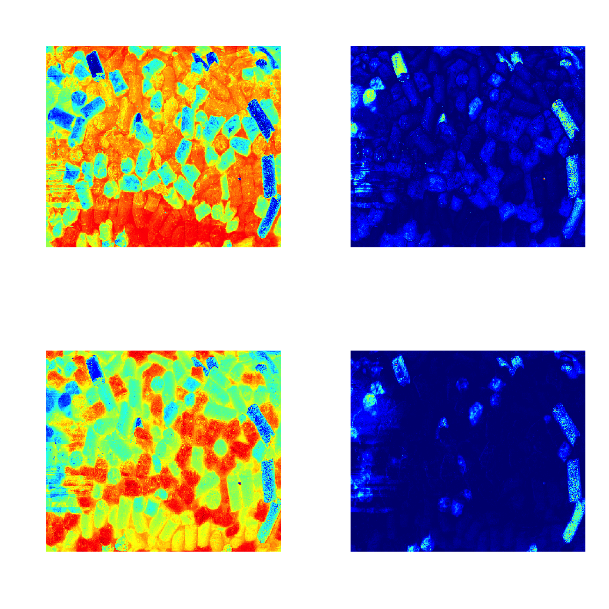
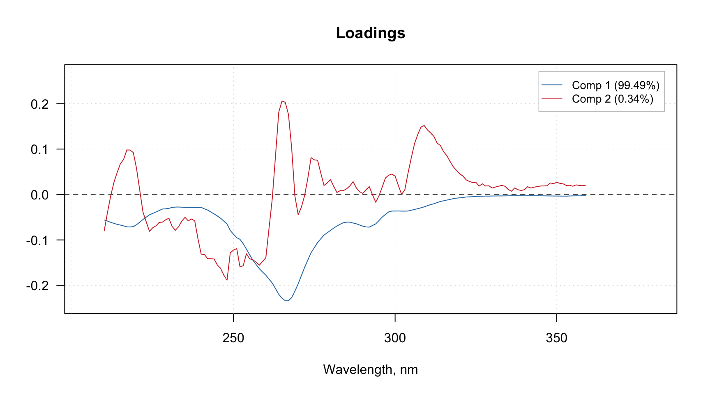
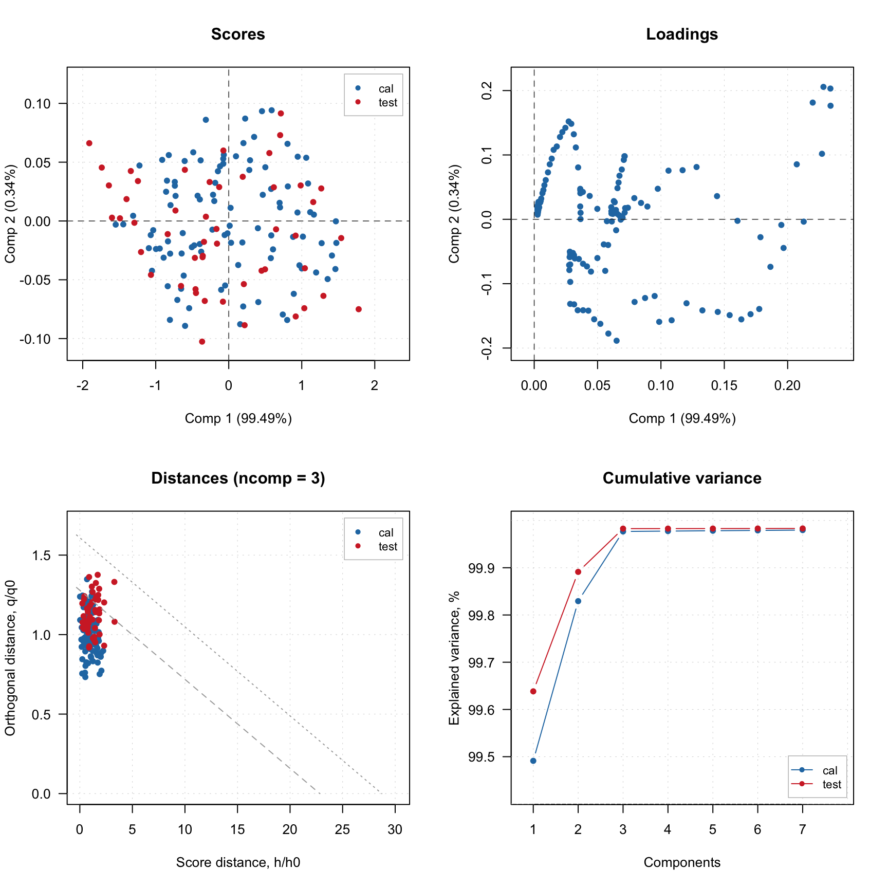

Plotting methods
First of all you can use the methods mdaplot() and mdaplotg() (or any others, e.g. ggplot2) for easy visualisation of the results as they are all available as matrices with proper names, attributes, etc. In the example below I create scores and loadings plots for PC1 vs PC2. Here I assume that the last model you have created was the one with test set validation, however scores are shown only for calibration set.
par(mfrow = c(1, 2))
mdaplot(m$res$cal$scores, type = "p", show.labels = TRUE, show.lines = c(0, 0))
mdaplot(m$loadings, type = "p", show.labels = TRUE, show.lines = c(0, 0))To simplify this routine, every model and result class also has a number of functions for visualization. Thus for PCA the function list includes scores and loadings plots, explained variance and cumulative explained variance plots, distance/residuals plots, and many others.
A function that does the same for different models and results has always the same name. For example, plotPredictions will show predicted vs. measured plot for PLS model and PLS result, MLR model and MLR result, SIMCA model and SIMCA result, and so on, although the plot itself will be quite different. The first argument must always be either a model or a result object.
The major difference between plots for model and plots for result is following. A plot for result always shows one set of data objects — one set of points, lines or bars. For example, predicted vs. measured values for calibration set or scores values for test set and so on. For such plots method mdaplot() is used and you can provide any arguments, available for this method (e.g. color group scores for calibration results, add confidence ellipses for scores, etc.).
And a plot for a model in most cases shows several sets of data objects, e.g. predicted values for calibration and validation. In this case, a corresponding method uses mdaplotg() and, therefore, you can adjust the plot using arguments described for this method.
Here are some examples for results:
# create a factor for combination of Sex and Region values
g1 <- factor(Xc[, "Sex"], labels = c("M", "F"))
g2 <- factor(Xc[, "Region"], labels = c("S", "M"))
g <- interaction(g1, g2)
# scores plot for calibration results colored by Height
par(mfrow = c(2, 2))
plotScores(m$res$cal, show.labels = TRUE, cgroup = Xc[, "Height"])
# scores plot colored by the factor created above and confidence ellipses
p = plotScores(m$res$cal, c(1, 2), cgroup = g)
plotConfidenceEllipse(p)
# distance plot for calibration results with labels
plotResiduals(m$res$cal, show.labels = TRUE)
# variance plot for calibration results with values as labels
plotVariance(m$res$cal, type = "h", show.labels = TRUE, labels = "values")
Scores plot can be also used together with plotHotellingEllipse() function. It works similar to plotConfidenceEllipse() or plotConvexHull() however does not require grouping of the values. You can add the ellipse both to score plot for results and score plot for model. In case of model, if you have e.g. both calibration and test set results you need to specify which one you want to use for the creating the ellipse. Code below shows several examples.
par(mfrow = c(2, 2))
# default options for calibration results
p = plotScores(m$res$cal, xlim = c(-8, 8), ylim = c(-8, 8))
plotHotellingEllipse(p)
# also for calibration results but with specific significance limit and color
p = plotScores(m$res$cal, xlim = c(-8, 8), ylim = c(-8, 8))
plotHotellingEllipse(p, conf.lim = 0.9, col = "red")
# in case if several results objects are available, specify which plot series to use
# for creating the ellipse, in the example below we take the first plot series which
# corresponds to calibration set
p = plotScores(m, xlim = c(-8, 8), ylim = c(-8, 8))
plotHotellingEllipse(p[[1]])
# same but with specific settings for color and line
p = plotScores(m, xlim = c(-8, 8), ylim = c(-8, 8))
plotHotellingEllipse(p[[1]], col = "red", lty = 1, lwd = 0.5)The color grouping option is not available for the group (model) plots as colors are used there to underline the groups.
Now let’s look at similar plots (plus loadings) for a model.
par(mfrow = c(2, 2))
plotScores(m, c(1, 3), show.labels = TRUE)
plotLoadings(m, c(1, 3), show.labels = TRUE)
plotResiduals(m, show.labels = TRUE, col = c("green", "red"))
plotVariance(m, type = "h", show.labels = TRUE, labels = "values")
As you can see, for in case of model, the distance plot also shows some lines. These are critical limits, all details about them as well as how to use the distance/residuals plot will be given in the next section.
If model plot show values from calibration and validation objects (e.g. scores, distances, etc), you can specify which result to show. In the example below left plot is made using default settings, for the right plot we specified list with results explicitly. Note, that the results should be specified as a named list.
par(mfrow = c(1, 2))
plotResiduals(m)
plotResiduals(m, res = list("train" = m$res$cal))
Finally, method plot() shows the main four PCA plots as a model (or results) overview.
plot(m, show.labels = TRUE)
You do not have to care about labels, names, legend and so on, however if necessary you can always change almost anything. See full list of methods available for PCA by ?pca and ?pcares.
Support for images
As it was described before, images can be used as a source of data for any methods. In this case the results, related to objects/pixels will inherit all necessary attributes and can be show as images as well. In the example below we make a PCA model for the image data from the package and show scores and distances.
data(pellets)
X = mda.im2data(pellets)
m = pca(X)
par(mfrow = c(2, 2))
imshow(m$res$cal$scores)
imshow(m$res$cal$Q)
imshow(m$res$cal$scores, 2)
imshow(m$res$cal$Q, 2)
Manual x-values for loading line plot
As it was discussed in the previous chapter, you can specify a special attribute, "xaxis.values" to a dataset, which will be used as manual x-values in bar and line plots. When we create any model and/or results the most important attributes, including this one, are inherited. For example when you make a loading line plot it will be shown using the attribute values.
Here is an example that demonstrate this feature using PCA decomposition of the Simdata (UV/Vis spectra).
data(simdata)
X = simdata$spectra.c
attr(X, "xaxis.name") = "Wavelength, nm"
attr(X, "xaxis.values") = simdata$wavelength
m = pca(X, 3)
plotLoadings(m, 1:2, type = "l")
Excluding rows and columns
PCA as well as any other method in mdatools can exclude rows and columns from calculations. For example, it can be useful if you have some candidates for outliers or do variable selection and do not want to remove rows and columns from the data matrix. In this case you can just specify two additional parameters, exclcols and exclrows, using either numbers or names of rows/columns to be excluded. You can also specify a vector with logical values (all TRUEs will be excluded).
The excluded rows are not used for creating a model and calculation of model’s and results’ performance (e.g. explained variance). However main results (for PCA — scores and residual distances) are calculated for these rows as well and set hidden, so you will not see them on plots. You can always show values for excluded objects by using parameter show.excluded = TRUE. It is implemented via attributes “known” for plotting methods from mdatools so if you use e.g. ggplot2 you will see all points.
The excluded columns are not used for any calculations either, the corresponding results (e.g. loadings or regression coefficients) will have zero values for such columns and be also hidden on plots. Here is a simple example.
data(people)
m = pca(people, 5, scale = T, exclrows = c("Lars", "Federico"), exclcols = "Income")
par(mfrow = c(2, 2))
plotScores(m, show.labels = TRUE)
plotScores(m, show.labels = TRUE, show.excluded = TRUE)
plotResiduals(m, show.labels = TRUE, show.excluded = TRUE)
plotLoadings(m, show.labels = TRUE, show.excluded = TRUE)
As you can see, the excluded values (or variables in case of loadings plot) are either hidden completely or shown as gray points if show.excluded parameter is set to TRUE.
Here is the matrix with loadings, note that variable Income has zeros for loadings and the matrix has attribute exclrows set to 6 (which is a position of the variable):
# show matrix with loadings (look at row Income and attribute "exclrows")
show(m$loadings)## Comp 1 Comp 2 Comp 3
## Height -0.386393327 0.10697019 -0.004829174
## Weight -0.391013398 0.07820097 0.051916032
## Hairleng 0.350435073 -0.11623295 -0.103852349
## Shoesize -0.385424793 0.13805817 -0.069172117
## Age -0.103466285 0.18964288 -0.337243182
## Income 0.000000000 0.00000000 0.000000000
## Beer -0.317356319 -0.38259695 0.044338872
## Wine 0.140711271 0.57861817 -0.059833970
## Sex 0.364537185 -0.23838610 0.010818891
## Swim -0.377470722 0.04330411 0.008151288
## Region 0.140581701 0.60435183 0.040969200
## IQ 0.009849911 0.09372132 0.927669306
## Comp 4 Comp 5
## Height 0.12693029 -0.13128331
## Weight 0.04049593 -0.14757465
## Hairleng -0.04969503 -0.73669997
## Shoesize 0.01049098 -0.17075488
## Age -0.89254403 -0.02998028
## Income 0.00000000 0.00000000
## Beer -0.03908064 -0.21419831
## Wine 0.12347379 -0.41488773
## Sex 0.04025631 -0.18263577
## Swim 0.18149268 -0.30163601
## Region 0.15147464 0.17857614
## IQ -0.32978247 -0.11815762
## attr(,"exclrows")
## [1] 6
## attr(,"name")
## [1] "Loadings"
## attr(,"xaxis.name")
## [1] "Components"
## attr(,"yaxis.name")
## [1] "Variables"Such behavior will help to exclude and include rows and columns interactively, some examples will be shown later.